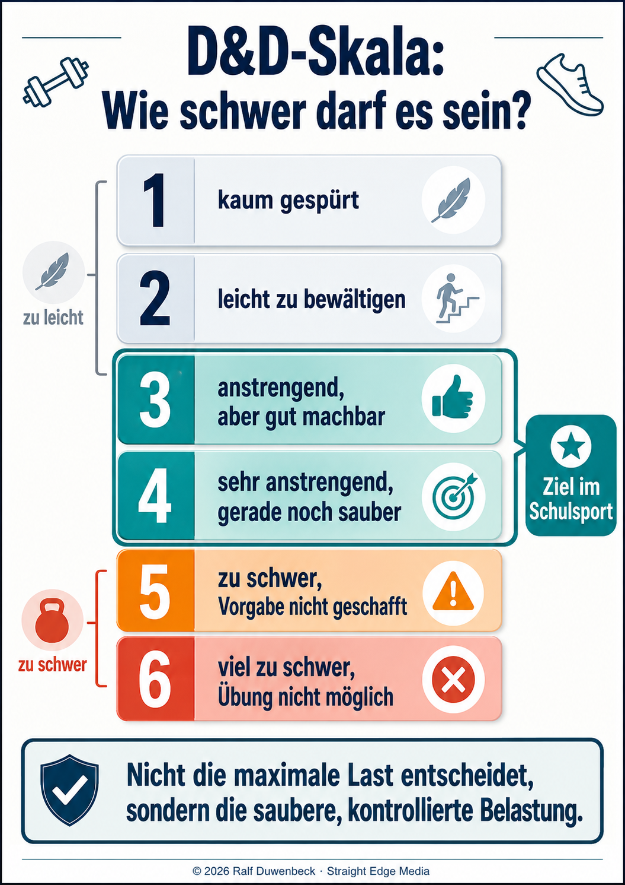

Fitnesstrends wie CrossFit, HIIT und Functional Training sind in der Lebenswelt von Jugendlichen präsent. Wie lassen sich diese Formate pädagogisch verantwortbar und gesundheitsorientiert im Unterricht nutzen – nicht als fertige Trainingsprogramme, sondern als Gegenstände kritischer Reflexion?
Grundlage: Ralf Duwenbeck – Mehr als eine CrossFit-BoxQuelle: Sportunterricht, Forum 2/2021Ansatz: Kritische Analyse und didaktische Einordnung
LeitgrafikFitnesstrends im Sportunterricht – motivierend, aber nur reflektiert und gesundheitsorientiertAntippen zum Vergrößern & Zoomen
Überblick
Fitnesstrends zwischen Motivation und Gesundheitsbildung
Fitnesstrends wie CrossFit, HIIT, Functional Training, Calisthenics, Bootcamp-Training oder aktuell auch Hyrox greifen ein reales Bedürfnis auf: Viele Jugendliche erleben diese Formen als modern, intensiv, gemeinschaftlich und leistungsbezogen.
Attraktivität der Trends: Sie versprechen „Fitness" in kurzer Zeit und verbinden Kraft, Ausdauer, Koordination und Durchhaltefähigkeit. CrossFit beschreibt sich selbst als Training aus „constant varied functional movements" bei hoher Intensität; Hyrox kombiniert Laufen mit funktionellen Kraftausdauerstationen; HIIT arbeitet mit kurzen hochintensiven Belastungsphasen. Solche Formate gehören zur Lebenswelt vieler Schülerinnen und Schüler, weil sie über soziale Medien, Apps, Wearables und Fitnessstudios stark sichtbar sind.
Kern-Unterscheidung für den Schulsport: Entscheidend ist nicht, ob ein Trend „cool" oder „anstrengend" ist, sondern ob er pädagogisch, gesundheitlich und didaktisch verantwortbar aufbereitet wird. Der zentrale Denkfehler wäre: Was im Fitnessstudio oder in der CrossFit-Box motivierend wirkt, ist automatisch guter Sportunterricht. Das ist falsch. Sportunterricht ist kein kommerzielles Trainingsprogramm und keine App-Kopie.
Pädagogischer Auftrag: Der Unterricht muss Schülerinnen und Schüler befähigen, Training zu verstehen, Belastung einzuschätzen, Übungen funktional zu beurteilen und gesundheitsorientiert zu handeln. Fitness darf nicht auf möglichst viele Wiederholungen, rote Köpfe, Zeitdruck und Leistungsoptimierung reduziert werden; sonst wird ein enger Fitnessbegriff bedient, der den gesundheitsbildenden Auftrag des Schulsports unterlaufen kann.
Acht zentrale Trendbegriffe
HIIT-Training: Hochintensive Intervalle mit kurzen Belastungs- und Pausenphasen – effizient, aber potenziell überlastend ohne individuelle Anpassung.
Functional Training: Alltagsnahe, mehrgelenkige Bewegungen mit Körpergewicht, Kleingeräten oder freien Gewichten – zentral ist: was für wen funktional ist.
Circuit Training / Zirkeltraining: Mehrere Stationen, oft zeiteffizient und schulnah umsetzbar – bereits bewährte Unterrichtsmethode, die Trendformate aufgreifen.
Bootcamp-Training: Gruppenorientiertes, intensives Ganzkörpertraining – motivierend, aber kritisch zu prüfen bei Drill- und Härtelogik.
Calisthenics: Krafttraining mit dem eigenen Körpergewicht – anspruchsvoll, erfordert sorgfältige Progression und Anfängerschonung.
Athletic Training: Sportartübergreifendes Kraft-, Schnelligkeits-, Stabilitäts- und Koordinationstraining – schulnah und präventiv wertvoll.
Tabata: Spezielle HIIT-Form mit sehr kurzen hochintensiven Intervallen (20s Belastung / 10s Pause, 8 Runden) – höchste Belastung, nur für Geübte.
Hyrox: Wettkampfformat aus Laufen und funktionellen Fitnessstationen – beispielhaft für Verbindung von Ausdauer und Kraft, aber Wettkampflogik kritisch prüfen.
Drei kritische Probleme beim unreflektierten Einsatz
Hohe Intensität ohne Differenzierung: Viele Trendformate setzen auf maximale Intensität. Das passt schlecht zu heterogenen Lerngruppen, in denen Anfänger, Vereinssportler, Unsichere, Übergewichtige, Verletzte und sehr Leistungsstarke gleichzeitig trainieren.
Quantität vor Qualität: Formate wie AMRAP (As Many Repetitions As Possible) belohnen häufig Geschwindigkeit und Wiederholungszahl statt Bewegungsqualität. Bei komplexen Übungen wie Burpees, Sprungvarianten, Kettlebell- oder Stützübungen kann das zu Technikverlust, Überlastung und unpräziser Bewegung führen.
Psychosoziale Überforderung: Musik, Timer, Gruppendruck und Vergleichbarkeit erzeugen eine Motivationsdynamik, die pädagogisch zweischneidig ist: Sie kann aktivieren, aber auch überfordern und riskantes Verhalten fördern. Gesundheitsorientierter Schulsport muss gerade nicht maximale Ausbelastung erzeugen, sondern kontrolliertes, individuell angemessenes und langfristig tragfähiges Trainieren vermitteln.
Kernsatz:CrossFit / HIIT / Functional Training können im Unterricht sinnvoll sein, wenn sie nicht als fertiges Training kopiert, sondern als Gegenstand reflektierter Praxis genutzt werden. Das bedeutet: Die Klasse erarbeitet zunächst Bewegungsqualität, Belastungssteuerung, Sicherheitskriterien und individuelle Anpassungen. Erst danach kann ein Workout-Format exemplarisch erprobt werden.
Schulische Einordnung der Trendbegriffe
Mögliche schulische Nutzung und kritische Punkte bei Fitnesstrends.
Trendbegriff
Schulisch nutzbar als
Kritischer Blick
CrossFit
Beispiel für funktionelle, intensive Ganzkörperformate
Gefahr der bloßen Trainingskopie, AMRAP-Logik, Technikverlust unter Ermüdung
HIIT
Belastungs-Pausen-Experiment, Vergleich von Intensitäten
Hohe Intensität ist nicht automatisch gesundheitsorientiert
Functional Training
Analyse alltagsnaher und sportnaher Bewegungen
„Funktionell" hängt von Person, Ziel und Voraussetzung ab
Calisthenics
Körpergewichtstraining mit Progressionen
Anspruchsvolle Übungen können Anfänger schnell überfordern
Bootcamp-Training
Gruppenmotivation, Zirkel- und Teamformate
Drill-, Härte- und Vergleichslogik kritisch prüfen
Hyrox / Hybrid Training
Verbindung von Laufen und Kraftausdauerstationen
Wettkampflogik nicht unreflektiert in heterogene Klassen übertragen
ÜbersichtCrossFit im Unterricht? – Chancen, Risiken und BedingungenAntippen zum Vergrößern & Zoomen
Abschnitt 1
CrossFit · HIIT · Functional Training im Unterricht
Eine vertiefende Analyse dieser drei zentralen Trendformate und ihre didaktische Transformation für den schulischen Kontext.
Didaktische Dekonstruktion statt Übernahme: Trends sind didaktische Folien: Man nutzt ihre Attraktivität, dekonstruiert aber ihre Logik. Aus „CrossFit" wird nicht „möglichst hart trainieren", sondern ein Unterrichtsthema zu funktionellen Ganzkörperübungen, Belastungssteuerung und Bewegungsqualität. Aus „HIIT" wird nicht „alle bis an die Grenze treiben", sondern ein Vergleich unterschiedlicher Belastungs-Pausen-Strukturen.
Zentrale Reflexionsfragen im Unterricht: „Wann kippt die Technik?", „Wie verändert Zeitdruck die Ausführung?", „Welche Übung passt zu welchen Voraussetzungen?", „Wie lässt sich Belastung steuern?" und „Wann wird aus Trainingsreiz ein Gesundheitsrisiko?" – Diese Fragen ersetzen das klassische Leistungs-Ranking „Wer schafft am meisten?"
Funktionalität als Person-Bezug: Aus „Functional Training" wird nicht ein Modewort, sondern die konkrete Frage, wann eine Übung für eine bestimmte Person in einer bestimmten Situation wirklich funktional ist. Das ist das Gegenteil einer universellen Trainingskopie.

Grafik 1D&D-Skala: Wie schwer darf es bei Trendsportarten sein?Antippen zum Vergrößern & Zoomen
Die D&D-Skala erinnert: Die Intensität eines Trainings muss nicht maximale Ausbelastung sein, um wirksam zu sein. Besonders bei CrossFit und HIIT-Formaten ist die Gefahr groß, dass SchülerInnen ohne Reflexion direkt in Stufe 9–10 gehen – mit Technikverlust, Übertraining und Frustration als Folge. Stattdessen: Bewusst zwischen Stufe 3–4 trainieren, Technik sichern, individuell anpassen.
Quellen & Literatur
Dokumentierte Originalquelle
Fachartikel: Mehr als eine CrossFit-Box – Wenn sogenannte Fitnesstrends unverändert und unreflektiert in den Sportunterricht übertragen werden. Autor: Ralf Duwenbeck Quelle: Sportunterricht, Heft 2/2021 (Forum zur Diskussion), Hofmann Verlag Thema: Kritische Analyse der CrossFit-Integration in den Schulsport und Unterscheidung zwischen Trend-Übernahme und didaktischer Reduktion.
Der Artikel setzt sich intensiv mit der Frage auseinander, wie Fitnesstrends pädagogisch verantwortbar im Unterricht eingesetzt werden können – nicht als fertige Trainingsprogramme, sondern als Gegenstände reflektierter Praxis. Die Analyse zeigt auf, welche Probleme entstehen, wenn trends unreflektiert kopiert werden, und welche Chancen sich durch didaktische Dekonstruktion ergeben.